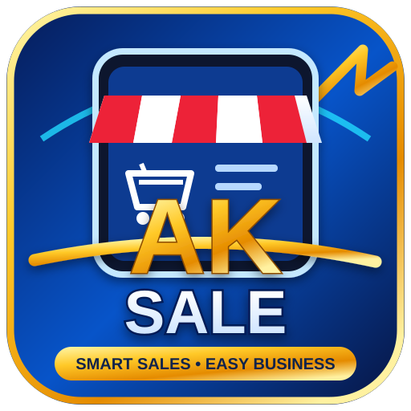

▦
AK Sale POS
ဆိုင်အရောင်း၊ ကုန်ပစ္စည်း၊ စာရင်းနှင့် အစီရင်ခံစာ စီမံခန့်ခွဲရန်။
POS ဖွင့်ရန်
AK PLATFORMBusiness tools for MyanmarAK Market ↗ဆိုင်အရောင်းစနစ်၊ အွန်လိုင်းဈေးကွက်နဲ့ ကြော်ငြာစီမံခန့်ခွဲမှုကို တစ်နေရာတည်းက ဝင်ရောက်အသုံးပြုနိုင်ပါတယ်။
လိုအပ်တဲ့လုပ်ဆောင်ချက်ကို ရွေးပြီး တိုက်ရိုက်ဝင်ပါ။
ဆိုင်အရောင်း၊ ကုန်ပစ္စည်း၊ စာရင်းနှင့် အစီရင်ခံစာ စီမံခန့်ခွဲရန်။
POS ဖွင့်ရန်ပစ္စည်းရှာဖွေ၊ ဈေးနှုန်းနှိုင်းယှဉ်၊ ဆိုင်များကြည့်ရှုပြီး အော်ဒါဆက်သွယ်ရန်။
ဈေးကွက်ဝင်ရန်သဘောတူထားသော ဆိုင်စာရင်းခွဲခြားပြီး ကြော်ငြာစာသားဖန်တီး၊ Share လုပ်ရန်။
ကြော်ငြာစင်တာဖွင့်ရန်Website အသုံးပြုရာတွင် အကူအညီနှင့် ကြော်ငြာအပ်နှံမှုများ။
ဆက်သွယ်ရန်